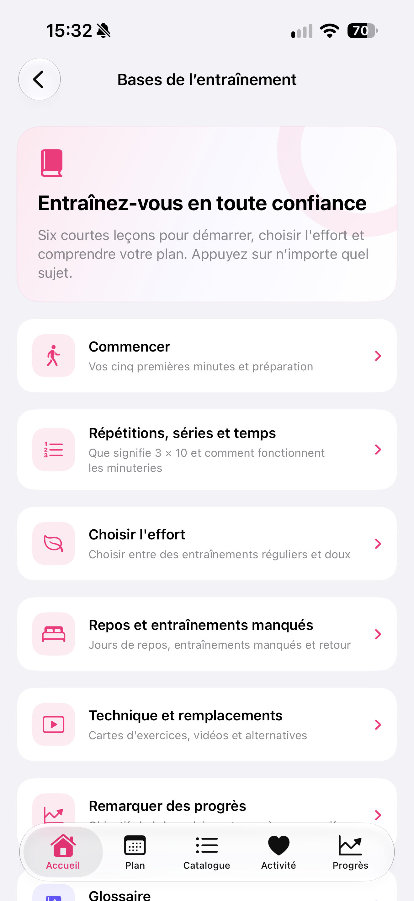
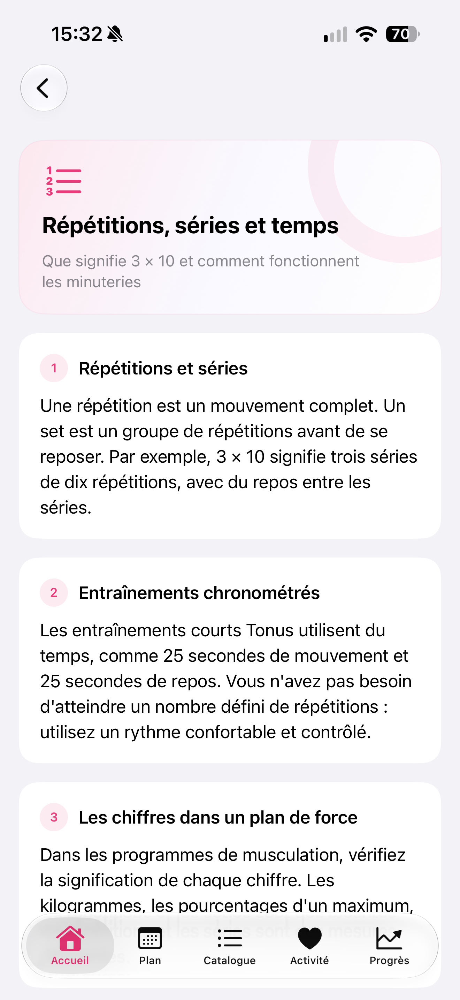

Par Nikita Revin, développeur de Tonus · 27 octobre 2026
Retrouvez les six leçons de Tonus, comprenez la notation des séances et consultez les dix termes du glossaire avant de commencer.
Une séance affiche des répétitions, des séries ou des durées. Si un terme vous manque, vous pouvez consulter les leçons de Tonus avant de lancer le chronomètre. La rubrique Bases de l’entraînement réunit six sujets et un glossaire de dix termes.
Ouvrir les bases depuis l’accueil
Dans l’onglet Accueil, cherchez le raccourci vers les leçons. Il ouvre la page Bases de l’entraînement. Faites défiler la liste si le sujet ou le Glossaire n’est pas encore visible, puis touchez la carte qui vous intéresse.
Vous pouvez ouvrir directement une leçon sans lire les précédentes. Chaque carte annonce son sujet et une courte description. Pour une première prise en main, Commencer présente la préparation d’une séance courte.

Choisir une leçon selon la question du moment
- Répétitions, séries et temps explique comment lire les nombres et les minuteries.
- Choisir l’effort décrit les options d’effort régulier ou doux.
- Repos et entraînements manqués présente les jours de repos et le retour au plan après une séance manquée.
- Technique et remplacements renvoie aux fiches d’exercices, aux vidéos et aux alternatives disponibles.
- Remarquer des progrès explique ce que l’on peut consulter dans les résultats enregistrés.
Ouvrez le sujet correspondant à votre question, lisez les sections puis revenez à la séance ou au calendrier. Lire une leçon ne lance aucun exercice et ne marque aucune séance comme terminée.
Lire une indication comme 3 × 10
Dans la leçon Répétitions, séries et temps, une répétition correspond à un mouvement complet. Une série regroupe plusieurs répétitions avant le repos. L’exemple 3 × 10 désigne donc trois séries de dix répétitions, avec du repos entre les séries.
Cet exemple explique la notation. Pour la séance que vous avez ouverte, lisez les consignes affichées pour chaque exercice : elles peuvent indiquer un nombre de répétitions ou une durée. Une durée de mouvement et un temps de repos se lisent séparément.

La capture montre un exemple de leçon. Les nombres visibles illustrent les explications de la version 1.4 ; ils ne constituent pas un programme personnalisé pour la personne qui lit cet article.
Retrouver un mot dans le glossaire
En bas de la liste des leçons, ouvrez Glossaire. Il comporte dix entrées, notamment répétition, série, repos, échauffement, effort, réserve, cycle, superset, maximum et tempo. Touchez un terme pour afficher sa définition.
Le glossaire sert à retrouver une explication précise sans parcourir tout le cours. Si vous cherchez ensuite comment un exercice est présenté dans Tonus, ouvrez la leçon Technique et remplacements, puis son lien vers le catalogue d’exercices.
Une fiche peut présenter la technique écrite, des points de contrôle et les erreurs courantes disponibles pour cet exercice. La vidéo est une ressource séparée. Sa lecture en ligne nécessite une connexion ; les services vidéo externes peuvent afficher des publicités.
Revenir aux consignes de la séance
Après la lecture, revenez à la séance que vous souhaitiez consulter et vérifiez son contenu. Si vous ouvrez un programme de musculation, regardez aussi les résultats de départ demandés et les unités : le guide de configuration d’un programme de force détaille ces champs.
Ces leçons expliquent le fonctionnement et les termes employés dans Tonus. Pour faire vérifier un mouvement ou savoir s’il convient à votre situation, demandez conseil à un professionnel qualifié. Tonus ne fournit pas de soins médicaux.
Ce guide décrit Tonus 1.4 pour iPhone sous iOS 17 ou une version ultérieure. L’accès est gratuit, sans compte, abonnement ni achats intégrés. Les plans et les consignes écrites fonctionnent hors ligne. Les vidéos en ligne nécessitent une connexion ; les services externes peuvent afficher des publicités. La connexion à Apple Santé est facultative.